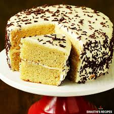

Eggless Cake Recipe

Description
I don’t think I’ve ever been as frustrated when recipe testing as I was when it came to trialing out an eggless vanilla cake!
Well, I can laugh about it now, because after some drastic changes to the methods I was using, I finally came up with the perfect eggless vanilla cake! It is soft, moist, flavourful and you wouldn’t have a clue that it didn’t have any eggs! I frosted mine with my stabilized whipped cream frosting recipe, but it will literally pair perfectly with almost any type of frosting.
Ingredients
- 2½ cups (330 g) flour - regular, all purpose
- 2½ tsp baking powder
- ½ tsp salt
- ¾ cup (185 g) yoghurt - regular (not Greek - see note 1), room temperature
- 1½ cups (300 g) white granulated sugar
- And other stuff
Steps
- Preheat oven to 375 degrees F (190 degrees C). Grease a 9x13 inch casserole dish.
- Bring a large pot of lightly salted water to a boil. Add noodles and cook for 8 to 10 minutes or until al dente; drain.
- In a medium bowl combine eggs, ricotta cheese, mushroom soup, Cheddar cheese, Parmesan cheese, sour cream and soup mix.
- In prepared dish layer noodles, cheese mixture, broccoli, carrots and corn. Repeat layers with remaining ingredients, ending with cheese
- Bake, covered, in preheated oven for 30 minutes. Uncover and bake an additional 10 minutes.